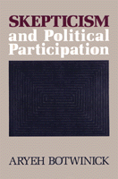

<body bgcolor="#FFFFFF" text="#000000" link="#0000FF" vlink="#CC0000" alink="#CC0000"><center><hr width="350" size="1" align="center" noshade>Arguing for a recovery of a radical democratic tradition that emphasizes the role of individual participation in the development and control of social and political institutions<hr width="350" size="1" align="center" noshade><p><a href="https://cdcshoppingcart.uchicago.edu/Cart/ChicagoBook.aspx?ISBN=9780877226574&&PRESS=temple" target="_top">Buy this book!</a> | <a href="https://cdcshoppingcart.uchicago.edu/Cart/Cart.aspx?PRESS=temple" target="_top">View Cart</a> | <a href="https://cdcshoppingcart.uchicago.edu/Cart/Cart.aspx?PRESS=temple" target="_top">Check Out</a></p><p></p></center><!--none//--><h1>Skepticism and Political Participation</h1>
<h3>Aryeh Botwinick</h3>
<P>cloth 0-87722-657-1 $74.50, Jan 90, <FONT COLOR=#990033>Out of Stock Unavailable</FONT>
<br>Electronic Book 1-43990-410-3 $73.50 <FONT COLOR=#990033>Out of Stock Unavailable</FONT>
<BR> 256 pp
</P><BLOCKQUOTE><I>"These essays are a wonderful treat: for their originality, philosophical breadth, and their contribution to democratic theory. Botwinick makes a sophisticated and fascinating case for extreme skepticism and supplying the best arguments for a participatory and egalitarian society. The work is full of endless surprises, of unusual juxtapositions, e.g. of Lyotard and Maimonides, and original readings of Machiavelli, Wittgenstein, Foucault, and others. In addition to being philosophically exacting, the work is notable for its attempt to bring postmodern thinking into political and theoretical focus. It is a humanistic work of a very high order."</I>
<br>&#151<b>Sheldon S. Wolin</b>, Professor of Politics Emeritus, Princeton University<I></I></BLOCKQUOTE>
<p>Aryeh Botwinick argues for the recovery of a radical democratic tradition that emphasizes the role of individual participation in the development and control of social and political institutions. Such involvement implies philosophical skepticism&#151the assumption that the truth about what is the best course of action cannot be known with certainty and that, therefore, every person�s opinion has an equal claim to be considered. The crucial stumbling block to reappropriating this radical egalitarian tradition is the supposed unviability of a consistent skepticism. In an effort to chart a new course of philosophical inquiry into political matters, Botwinick grapples with the formulation of a consistent version of skepticism, claiming that it provides "a continually renewing impetus for the expansion of political participation."
<p>Twentieth-century philosophers have, for the most part, opted for some version of mitigated skepticism, which, the author argues, "has blinded them to the radical political implications of skepticism." Underscoring a pattern of convergence between Anglo-American and Continental philosophy, Botwinick proposes a number of strategies to rehabilitate the rationality of participatory democratic political institutions by articulating an acceptable version of consistent skepticism.
<BR>&nbsp;<h2>Reviews</h2>
<p><I>"This strong and important work explores the political implications of a radical epistemological skepticism in an eloquent and cogent manner. It inserts itself squarely into contemporary philosophical trends: the abandonment of 'foundationalism' and the rise of neopragmatism. There are two unique an unusual qualities to the book: first, it focuses on the political dimensions of epistemology&#151a dimension commonly neglected in the literature; second, Botwinick relies both on Anglo-American arguments (from Quine to the later Wittgenstein) and on Continental philosophy (from Nietzsche to Foucault)&#151something rarely done in other works."</I>
<br>&#151<b>Fred Dallmayr</b>, Packui Dee Professor of Government, University of Notre Dame
<BR>&nbsp;<h2>Contents</h2><P>
<p>Introduction
<br>1. A Neopragmatist Defense of Democratic Participation
<br>2. The Political Implications of Wittgenstein's Skepticism
<br>3. Participation and Tacit Knowledge in Plato, Machiavelli, and Hobbes
<br>4. The Role of Tacit Knowledge in the Argument of Federalist Number Ten
<br>5. Leadership, Knowledge, and Truth in Gramsci's Political Thought
<br>6. Nietzsche, Foucault, and the Prospects of Postmodern Political Philosophy
<br>7. Maimonides and Lyotard: Convergences between the Premodern and the Postmodern
<br>Notes
<br>Index
</P><BR>&nbsp;<H2>About the Author(s)</H2>
<P><b>Aryeh Botwinick</b>, Associate Professor of Political Science at Temple University, is the author of seven books, including <I>Democracy and Scarcity</I>, <I><A HREF="477_reg.html" TARGET="_top">Power and Empowerment: A Radical Theory of Participatory Democracy</A></I> (with Peter Bachrach), and <I><A HREF="1018_reg.html" TARGET="_top">Postmodernism and Democratic Theory</A></I>.</P>
<BR><H2>Subject Categories</H2>
<p><A HREF="/tempress/political.html" TARGET="_top">Political Science and Public Policy</a>
<BR><A HREF="/tempress/philosophy.html" TARGET="_top">Philosophy and Ethics</a>
</p>
<p align="center"><a href="https://cdcshoppingcart.uchicago.edu/Cart/ChicagoBook.aspx?ISBN=9780877226574&&PRESS=temple" target="_top">Buy this book!</a> | <a href="https://cdcshoppingcart.uchicago.edu/Cart/Cart.aspx?PRESS=temple" target="_top">View Cart</a> | <a href="https://cdcshoppingcart.uchicago.edu/Cart/Cart.aspx?PRESS=temple" target="_top">Check Out</a></p><p><font face="Arial" size="1"><a href="copyright.html" onMouseOver="window.status='Web Copyright Policy';return true;" onMouseOut="window.status=''" title="Web Copyright Policy">&copy;</a> 2015 <a href="http://www.temple.edu" target="new" onMouseOver="window.status='Link to Temple University home page';return true;" onMouseOut="window.status=''" title="Link to Temple University home page">Temple University</a>. All Rights Reserved. http://www.temple.edu/tempress/titles/592_reg.html</font></p>